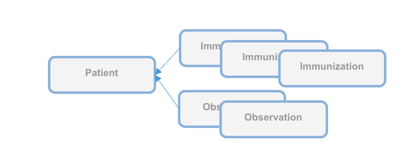

WHO SMART Trust
1.0.0 - 1.0.0

WHO SMART Trust
1.0.0 - 1.0.0

This page is part of the Trust (v1.0.0: Release) based on FHIR (HL7® FHIR® Standard) R4. This is the current published version in its permanent home (it will always be available at this URL). For a full list of available versions, see the Directory of published versions
Business rules for health credentials are the instructions, guidelines, and regulations that express health policies such as “this course of vaccines meets jurisdiction entry requirements” or “this patient should complete their immunization schedule”. These policies can support a range of scenarios such as evaluating proof of vaccination or providing continuity of care.
Applying business rules in the context of trust networks for health credentials requires a computable and standards-based approach for defining the rules and subsequently evaluating them against credentials. For example, individuals who wish to test their vaccine credentials against border entry requirement prior to travel must be able to evaluate the business rules for a variety of destination jurisdictions against a variety of credential formats.
The WHO DDCC effort uses Clinical Quality Language (CQL), a standard for health domain business rules, as the computable representation of business rules to apply against health credentials in its Global Trust Network. CQL defines a human readable representation of logic that can be evaluated against clinical knowledge, including health credentials. CQL is a domain specific language intended to be usable by clinical domain experts to both author and read clinical expressions and does not require software development expertise. Once CQL has been authored, running it against clinical knowledge first requires translating the CQL into its canonical representation, the Expression Logical Model (ELM). The resulting ELM expression of the CQL can be run against a DDCC health credential using a CQL execution engine. The result can be packaged and shared, meaning that the execution of CQL does not require a central server and is platform independent. This ensures that the CQL can be run on health data without requiring personal health data to be shared.
Health credentials can be specified using multiple standards. DDCC health credentials, which can be evaluated against CQL business rules, are specified using the Fast Healthcare Interoperability Resources (FHIR) standard. FHIR is a standard that supports the electronic exchange of healthcare information. The FHIR standard is based on common internet standards widely used across industry such as the Hypertext Transfer Protocol (HTTP), JavaScript Object Notation (JSON), representational state transfer (REST), and the Open Authorization (OAuth) standard.
Using CQL to apply business rules against health credentials in practice is a process that takes place over a few steps. For example, given a scenario where a health ministry intends to implement requirements for COVID-19 testing for entry into a country, the following steps would be followed through the lifecycle of the rules:
Conceptualizing the rules: First, the rules themselves need to be decided at a governance level. In this example the health ministry may decide to require a negative COVID-19 test within 72 hours to allow entry into a county
Authoring the rules: The rules can be written in CQL by clinical domain experts. For this example, the CQL would express the 72 hour timeframe and indicate which COVID-19 tests are acceptable.
Publishing the rules: The CQL rules can be packaged as a FHIR Library resource and published with an online trust health service. In this example publishing the rules would allow a traveler to retrieve the published rules to run in a universal verifier application against their SMART Health Card before traveling to ensure that they meet the entry requirements.
Verify the health credentials: Before CQL can be run against health credentials the credentials need to be validated to ensure that they are authentic. This validation can make use of federated cryptography infrastructure to share authentication infrastructure across jurisdictions.
Convert the health credentials to the format supported for verification: The WHO DDCC effort defines a FHIR-based common standard for health credentials against which CQL can be run. Credentials in other standards can be converted to the DDCC FHIR standard using FHIR StructureMaps and ConceptMaps defined in the DDCC Implementation Guide.
Execute CQL against the health credentials: Once the credentials have been converted, the CQL can be run against them and a result determined. In this example the results would show whether or not the traveler meets the travel requirements.
CQL expresses the logic of business rules in a way that is both human readable and computable. The logic must be written against a common standard format for representing the credentials for the logic to be computed against health credentials in a scalable and standardized way.
CQL can be authored using any text editor, however using an integrated development environment (IDE) that specifically supports CQL can streamline the experience. The Visual Studio (VS) Code IDE has a CQL extension that supports syntax highlighting when writing CQL.
CQL artifacts are organized around the concept of a library. A CQL library can be thought of as a container for a specific instance of business logic. A CQL file begins with a declaration of the library name and version:
library DDCCPass version '1.0.0'
Each CQL library operates against one or more specific data models. In the case of CQL intended to
be run against DDCC health credentials the data model is FHIR, which can be specified with the
using declaration:
using FHIR version '4.0.1'
CQL libraries can also contain terminology declarations, including codesystems and valuesets. These declarations allow the CQL to define a local name to represent a codesystem or valueset used in the CQL logic:
valueset "WHO Specimen Sample Origin": 'https://smart.who.int/ddcc/ValueSet-who-ddcc-sample-origin-covid-19.html'
The local name can then be used to reference the codesystem or valueset in the CQL:
define "ValidSampleOrigin": [Observation] O where O.method in "WHO Specimen Sample Origin"
The code systems and value sets referenced in DDCC health credentials can be found in the DDCC IG:
Complete information on authoring CQL, including examples, can be found in the CQL Authoring Guide. Additional guidelines and best practices can be found in the CRMI IG CQL Guidelines.
The WHO DDCC IG specifies health credentials using the FHIR standard, and the CQL for expressing business rules against credentials operates on the FHIR resources that make up a credential. The DDCC health credential document Bundle contains a minimal Patient resource along with appropriate linked Immunization resources representing information on vaccines administered and Observation resources representing test results.

CQL can be packaged for distribution in a FHIR Library resource, intended for describing and sharing knowledge artifacts like CQL. The CRMI IG Packaging Guidelines provide information on how CQL libraries should be packaged. Examples of CQL packaged in FHIR Libraries can be found in the DDCC IG Knowledge Artifact Libraries.
The following example CQL shows a simple example of business rules applied to immunizations:
// Declare the name and version of the Library of functions
library DDCCPass version '1.0.0'
// The version of FHIR we are using
using FHIR version '4.0.1'
// Execute all business rules relative to a specific Patient content
context Patient
// Define boolean valued business rule to check if there is an immunization that was completed
define "Completed Immunization": exists ("Completed Immunizations")
// Define a list of completed immunizations for which the dose number is the same as the series dose
// Immunization resources are queried from those that reference the Patient we are executing against
define "Completed Immunizations":
[Immunization] I
where ( I.protocolApplied.doseNumber.value = I.protocolApplied.seriesDoses.value )
CQL authoring resources:
Once CQL has been authored and packaged into a FHIR Library for distribution the CQL can be run in a CQL execution environment. Before being run, CQL must first be converted into its ELM representation using the CQL-to-ELM Translator. This conversion can be accomplished using the CQL to ELM Translation Service, which is also available as a docker image. The resulting ELM can then be run in a CQL Execution Engine. Available CQL Execution Engines include:
There is also a CQL Evaluator, which combines the CQL-to-ELM Translator with the Java CQL Evaluation Engine.
Running CQL also requires the appropriate terminology references to be present. Running CQL in the Java CQL Evaluation Engine requires access to a FHIR terminology server. The JavaScript CQL Execution Framework, in addition to supporting the use of terminology servers, also allows terminology resources to be passed into the library at the time of execution.
The DDCC Implementation Guide defines both the common standard representation against which the CQL can be written and the mappings for translating various source formats into the common representation. The source formats are
The common representation that these source health credential formats need to be transformed to before evaluating CQL business rules is the World Health Organization Digital Documentation of COVID-19 Certificates (WHO DDCC)
Translating across formats requires correctly mapping both the structure of the credential and the clinical concepts expressed within that structure.
Mapping the structure requires pulling data from the source format and expressing it in the destination format. For example, the name of the credential holder has different representations in each of the formats and needs to be correctly mapped to the destination format. Mapping the structure of the credential is accomplished using FHIR StructureMaps. StructureMaps define rules that describe how two different structures are related to each other and provides the logic that defines how instances can be converted from one structure to the other in an automated fashion.
In addition to mapping the overall structure, clinical concepts need to be correctly mapped. For example, one format may use LOINC to represent the type of a medical test while another format may use SNOMED CT. Mapping the clinical concepts from one format to another is accomplished using FHIR ConceptMaps. A ConceptMap defines a mapping from a set of concepts in one code system to concepts in another code system.
Using the StructureMaps to translate formats requires a mapping engine. Note that using the Java mapping engine also requires the use of a terminology server; it uses tx.fhir.org by default.
References:
This document describes how to run business rules written in Clinical Quality Language (CQL) against credentials to validate that provided data meets jurisdictional business requirements.
The following high level steps, described in detail below, can be used to run CQL business rules against a vaccination record:
The process starts with converting the vaccination credential to be evaluated into the DDCC FHIR model. For the examples used in this document we’ll start with an example credential payload in the SHC format, which you can download:
curl https://raw.githubusercontent.com/WorldHealthOrganization/ddcc/main/structuremap-tests/fixtures/shc/example-00-b-jws-payload-expanded.json --output example-00-b-jws-payload-expanded.json
Credentials can be converted using the appropriate StructureMaps using the Matchbox FHIR Server.
The Matchbox server can be run via its docker image. The following command starts the docker image on a local machine listening on port 8080:
docker run -d -p 8080:8080 --restart unless-stopped eu.gcr.io/fhir-ch/matchbox:v314
NOTE: At the time of writing the latest version of Matchbox does not correctly handle the required StructureMap transformations; ensure that the version of Matchbox you’re testing with has been updated. The Matchbox docker image does not appear to have a correct latest tag, so be sure to specify the actual version number of the latest docker image.
Running Matchbox in this fashion uses an in-memory data store rather than a backing database, so will not persist state across different container instantiations.
Matchbox needs the appropriate IGs to be loaded in order to perform the desired translations. The DDCC IG and the SHC IG can be loaded via the following curl commands against the Matchbox server:
curl -X 'POST' \
'http://localhost:8080/matchbox/fhir/ImplementationGuide' \
-H 'accept: application/fhir+json' \
-H 'Content-Type: application/fhir+json' \
-d '{ "resourceType": "ImplementationGuide", "version": "1.0.0", "name": "fhir.who.ddcc", "url": "http://smart.who.int/ddcc/package.tgz" }'
curl -X 'POST' \
'http://localhost:8080/matchbox/fhir/ImplementationGuide' \
-H 'accept: application/fhir+json' \
-H 'Content-Type: application/fhir+json' \
-d '{ "resourceType": "ImplementationGuide", "version": "0.6.2", "name": "hl7.fhir.uv.shc-vaccination", "packageId": "hl7.fhir.uv.shc-vaccination" }'
This is a two step process. The first step is to convert the vaccination credential payload into the DDCC CoreDataSet logical model using the appropriate StructureMap from the DDCC IG:
curl -X 'POST' \
'http://localhost:8080/matchbox/fhir/StructureMap/$transform?source=http://smart.who.int/ddcc/StructureMap/CertSHCtoCoreDataSet' \
-H 'accept: application/fhir+json' \
-H 'Content-Type: application/fhir+json' \
-d @example-00-b-jws-payload-expanded.json \
-o example-00-a-DDCCCoreDataSet.json
This should result in a new file containing the vaccine information in the intermediary CoreDataSet format. The data in the intermediary format can then be converted to a DDCC FHIR resource instance:
curl -X 'POST' \
'http://localhost:8080/matchbox/fhir/StructureMap/$transform?source=http://smart.who.int/ddcc/StructureMap/CoreDataSetVSToAddBundle' \
-H 'accept: application/fhir+json' \
-H 'Content-Type: application/fhir+json' \
-d @example-00-a-DDCCCoreDataSet.json \
-o example-00-a-DDCC.json
NOTE: At the time of writing these conversion steps did not work correctly, particularly the second one, and the CQL has not been tested against the final version
The record is now ready to be evaluated against the business rules.
Running CQL business rules against a record requires translating the CQL to the Expression Logical Model (ELM) representation and running the ELM in a CQL execution engine. For this document we’ll start with one of the examples from the DDCC IG:
// Declare the name and version of the Library of functions
library DDCCPass version '1.0.0'
// The version of FHIR we are using
using FHIR version '4.0.1'
// Execute all business rules relative to a specific Patient content
context Patient
// Define boolean valued business rule to check if there is an immunization that was completed
define "Completed Immunization": exists ("Completed Immunizations")
// Define a list of completed immunizations for which the dose number is the same as the series dose
// Immunization resources are queried from those that reference the Patient we are executing against
define "Completed Immunizations":
[Immunization] I
where ( I.protocolApplied.doseNumber.value = I.protocolApplied.seriesDoses.value )
You can place this example in a file called DDCCPass.cql and modify it as desired before proceeding.
CQL can be translated to ELM using the CQL Translation Service docker image. The following command starts the docker image on a local machine listening on port 8081:
docker run -d -p 8081:8080 --restart unless-stopped cqframework/cql-translation-service:latest
Once the translation service is running the CQL can be translated to ELM using the following curl command:
curl -X "POST" \
--url "http://localhost:8081/cql/translator/" \
--header "Content-Type: application/cql" \
--header "Accept: application/elm+json" \
--data-binary @DDCCPass.cql \
--output DDCCPassELM.json
As an alternative to translating the CQL, if the desired CQL already exists and the ELM translation is packaged with the CQL as part of a FHIR Library then the ELM can be extracted from the Library. This document describes how to extract the ELM using a simple Node.js project. Node.js will first need to be installed if it is not already available. A new Node.js project can be set up using npm:
mkdir ExtractELM
cd ExtractELM
npm init --yes
The following example JavaScript code can serve as a starting point:
// This example loads a FHIR Library, extracts the ELM, and writes it to a file
const { argv, exit } = require('process');
const fs = require('fs');
if (argv.length < 4) {
console.log(`Usage: ${argv[0]} ${argv[1]} <FHIR-Library> <ELM-File>`);
exit();
}
const libraryFile = argv[2];
const elmFile = argv[3];
// Load the Library contents and parse the JSON
const library = JSON.parse(fs.readFileSync(libraryFile), 'utf8');
// Find the ELM data
const elmContent = library.content?.find(c => c.contentType === 'application/elm+json')
if (!elmContent?.data) {
console.log('No ELM content found in Library');
exit();
}
// Base64 decode the ELM
const elm = atob(elmContent.data);
// Write the ELM to the desired output file
fs.writeFileSync(elmFile, elm);
An example FHIR Library containing ELM can be downloaded:
curl https://raw.githubusercontent.com/WorldHealthOrganization/ddcc/main/input/resources/Library-DDCCPass-1.0.0.json --output Library-DDCCPass-1.0.0.json
Once the FHIR Library has been downloaded the code can be run to extract the ELM from the Library:
node main.js Library-DDCCPass-1.0.0.json DDCCPassELM.json
Running the script should produce a file with the desired ELM translation.
The ELM translation of the CQL can be run against the vaccination record using the JavaScript CQL Execution Framework library along with the JavaScript CQL Execution FHIR Data Source. This document describes how to set this up in a simple Node.js project. Node.js will first need to be installed if it is not already available. A new Node.js project with the needed CQL libraries can be set up using npm:
mkdir CQLDemo
cd CQLDemo
npm init --yes
npm install cql-execution cql-exec-fhir
Once the project is set up the ELM from the CQL business rules can be evaluated against the vaccination credential that was converted to the DDCC resource instance. The following example JavaScript code can serve as a starting point:
// This example loads an ELM file and vaccination records and evaluates
// the ELM against each record
const { argv, exit } = require('process');
const fs = require('fs');
const cql = require('cql-execution');
const cqlfhir = require('cql-exec-fhir');
if (argv.length < 4) {
console.log(`Usage: ${argv[0]} ${argv[1]} <ELM-file> <vaccination-record>...`);
exit();
}
const elmFile = argv[2];
const recordFiles = argv.slice(3);
// Load the ELM and set up the execution environment
const elm = JSON.parse(fs.readFileSync(elmFile), 'utf8');
const library = new cql.Library(elm);
const executor = new cql.Executor(library);
// Load all the vaccination records
const patientSource = cqlfhir.PatientSource.FHIRv401();
const records = recordFiles.map(filename => JSON.parse(fs.readFileSync(filename, 'utf8')));
patientSource.loadBundles(records);
// Execute the business rules against the records and show the results
const results = executor.exec(patientSource);
console.log(results);
This code can be run to execute the business rules against the resource using the following command:
node main.js DDCCPassELM.json example-00-a-DDCC.json
Running the script should produce results that look similar to this:
Results {
patientResults: {
"ac1efa5f-9a92-48be-95a1-0550f18a349c": {
Patient: [FHIRObject],
'Completed Immunizations': [Array],
'Completed Immunization': true
}
},
unfilteredResults: {},
localIdPatientResultsMap: { 'ac1efa5f-9a92-48be-95a1-0550f18a349c': { DDCCPass: {} } },
patientEvaluatedRecords: {
'ac1efa5f-9a92-48be-95a1-0550f18a349c': [ [FHIRObject], [FHIRObject] ]
}
}